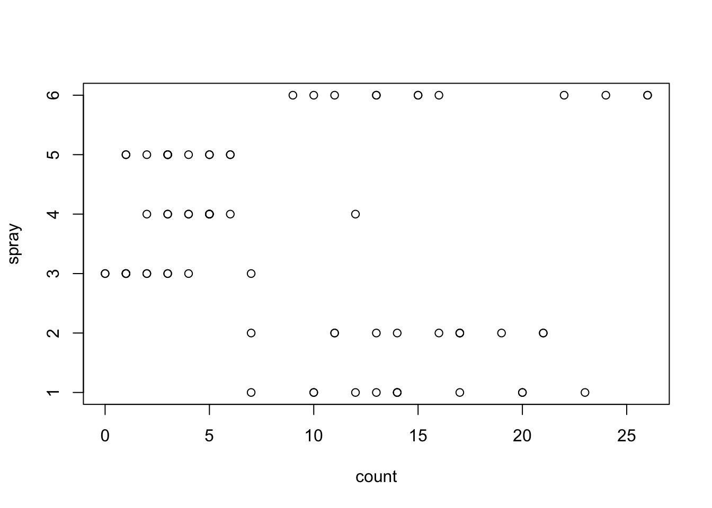

Generalized linear models (GLMs) are used when the response variable has some distribution other than normal - logistic regression (binary response) is by far the most commonly used GLM and Poisson regression (count response) is fairly common, too. In spite of this, there are many similarities between ordinary linear models and a generalized linear models.
The distribution of the residuals isn’t normal. Several types of residuals can be used for a GLM — R defaults to the deviance residual.
Response variance is no longer assumed equal (when variance depends on mean).
The linear model predicts a transformed version of the mean, rather than predicting the mean itself (the mean is transformed by what’s called a “Link Function”).
The UCBAdmissions data set is built into R and provides a tabulation of how many men and women applied and were admitted to six departments at UC Berkeley in 1973. Suppose we want to estimate whether male or female applicants were more likely to be admitted. Since each admission decision is binary, we will use a generalized linear model with binomial response to estimate the effect of gender on admission probability. The data are built-in as an array so we need to convert them to a data frame before getting started.
# A tibble: 12 × 4
Gender Dept Admitted Rejected
<fct> <fct> <dbl> <dbl>
1 Male A 512 313
2 Female A 89 19
3 Male B 353 207
4 Female B 17 8
5 Male C 120 205
6 Female C 202 391
7 Male D 138 279
8 Female D 131 244
9 Male E 53 138
10 Female E 94 299
11 Male F 22 351
12 Female F 24 317
Now fit the binomial regression model for admission probability. By default, the glm function uses logistic regression for a binomial response. The observations are aggregated by gender and department, so we have to pair the Admitted and Rejected columns as the response. If each row represented a single observation and the Admitted column were coded as 0/1 or TRUE/FALSE, we could use it alone as the response.
# estimate a logistic regression model.ucb_model =glm(cbind(Admitted, Rejected) ~ Dept + Gender, data=ucb, family='binomial')# plot the diagnosticslayout(matrix(1:4, 2, 2))plot(ucb_model)
# show the model summarysummary(ucb_model)
Call:
glm(formula = cbind(Admitted, Rejected) ~ Dept + Gender, family = "binomial",
data = ucb)
Coefficients:
Estimate Std. Error z value Pr(>|z|)
(Intercept) 0.58205 0.06899 8.436 <2e-16 ***
DeptB -0.04340 0.10984 -0.395 0.693
DeptC -1.26260 0.10663 -11.841 <2e-16 ***
DeptD -1.29461 0.10582 -12.234 <2e-16 ***
DeptE -1.73931 0.12611 -13.792 <2e-16 ***
DeptF -3.30648 0.16998 -19.452 <2e-16 ***
GenderFemale 0.09987 0.08085 1.235 0.217
---
Signif. codes: 0 '***' 0.001 '**' 0.01 '*' 0.05 '.' 0.1 ' ' 1
(Dispersion parameter for binomial family taken to be 1)
Null deviance: 877.056 on 11 degrees of freedom
Residual deviance: 20.204 on 5 degrees of freedom
AIC: 103.14
Number of Fisher Scoring iterations: 4
Diagnostics are especially difficult to interpret for logistic regression models with a small amount of data. These look only OK. According to the model summary, there are significant differences in admission rates by departments and not by gender.
For a logistic regression model, the estimated coefficients are reported as log odds ratios. A log odds ratio greater than zero corresponds to probability greater than 50%, and vice versa. Both Dept and Gender are categorical, so you can figure out the estimated log odds ratio for a particular combination by adding the relevant rows from the summary table. The default level of this combination is Male and DeptA.
5.1 Poisson Regression - Effectiveness of Bug Sprays
We conclude with an example using count data as a response. The InsectSprays dataset is built in to R so you can import it with the command data(InsectSprays). It has 72 observations of two features. The two features are: the type of insecticide that was applied to a plant, and the other is a count of how many insects were found on the plant. Our goal is to determine whether the different insecticides lead to a consistent difference in the number of insects.
Plotting the data reveals that there are six insecticides in the study, with twelve observations each:
data(InsectSprays)plot(InsectSprays)

We can see a few more things from the plot. Counts range from zero to 26, and it appears that the insecticides are in two groups: the counts for sprays 3, 4, and 5 are clustered at low counts (ony one count in this group is greater than six), while the counts for sprays 1, 2, and 6 are all at least seven. That suggests that there is a significant difference between the treatments.
We can also see that the counts are more densely clustered for the lesser counts, and more spread out for the greater counts. That’s an unequal variance, so the linear model is probably not appropriate. There is a response type specifically for count data that gets more spread out as the average count grows: Poisson. Let’s fit a Poisson regression to the insecticide data.
The diagnostics for this model look pretty good. The Q-Q plot may indicate slightly heavy tails, which would be a sign that the response is overdispersed for the Poisson distribution. A further check is to calculate the mean and variance for each group in the data (this is ony pratical because the model is simple and the number of levels is small). If the data has a Poisson distribution, we expect that the mean and the variance are approximately equal. Of course, real data never perfectly matches this expected relationship.
# check the men-variance relationshipgroup_by(InsectSprays, spray) |>summarize(mean =mean(count),var =var(count))
# A tibble: 6 × 3
spray mean var
<fct> <dbl> <dbl>
1 A 14.5 22.3
2 B 15.3 18.2
3 C 2.08 3.90
4 D 4.92 6.27
5 E 3.5 3
6 F 16.7 38.6
In most cases, the variance is slightly greater than the mean. Only group F has variance more than twice the mean, which is a reasonable threshold for where to begin to worry.
5.1.1 Negative-binomial regression
I’d probably leave the InsectSprays model as it is for simplicity, but it would also be reasonable to change the model to account for overdispersion. There are a lot of ways to do that, and one classic method is to model the response as a negative-binomial distribution. That requires loading the MASS package, which provies the glm.nb() function. Here’s the result:
# import the MASS packagelibrary(MASS)
Attaching package: 'MASS'
The following object is masked from 'package:dplyr':
select
#estimate the NB modelmodel_spray_nb =glm.nb(count ~ spray, data=InsectSprays)summary(model_spray_nb)
Call:
glm.nb(formula = count ~ spray, data = InsectSprays, init.theta = 28.09950714,
link = log)
Coefficients:
Estimate Std. Error z value Pr(>|z|)
(Intercept) 2.67415 0.09334 28.649 < 2e-16 ***
sprayB 0.05588 0.13082 0.427 0.669
sprayC -1.94018 0.22733 -8.535 < 2e-16 ***
sprayD -1.08152 0.16920 -6.392 1.64e-10 ***
sprayE -1.42139 0.18838 -7.545 4.52e-14 ***
sprayF 0.13926 0.12914 1.078 0.281
---
Signif. codes: 0 '***' 0.001 '**' 0.01 '*' 0.05 '.' 0.1 ' ' 1
(Dispersion parameter for Negative Binomial(28.0995) family taken to be 1)
Null deviance: 313.444 on 71 degrees of freedom
Residual deviance: 74.145 on 66 degrees of freedom
AIC: 374.22
Number of Fisher Scoring iterations: 1
Theta: 28.1
Std. Err.: 17.7
2 x log-likelihood: -360.218
The negative-binomial model has a smaller AIC and the Q-Q lies more along the line. We should conclude that the negative-binomial model appears to be a slightly better fit for the data.